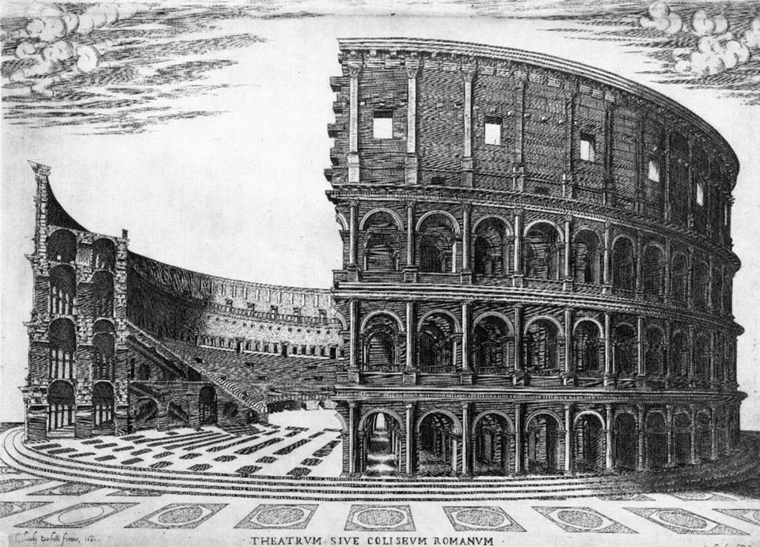

Exhibiciones


Reservas
Reserva tu lugar para vivir esta experiencia
Símbolo del Imperio Romano , reconocido como una de las siete maravillas del mundo, el Coliseo Romano, también conocido como Anfiteatro Flavio, es un anfiteatro de la antigua Roma que se utilizaba para albergar espectáculos públicos como combates de gladiadores, cacerías y espectáculos teatrales. Se encuentra en Roma, Italia, y es una de las atracciones turisticas más populares del mundo.
El Coliseo Romano, también conocido como Anfiteatro Flavio, fue construido entre los años 70 y 80 d.C. por los emperadores Vespasiano, Tito y Domiciano, de la dinastía Flavia. Esta monumental obra se levantó en el lugar donde antes había una laguna artificial perteneciente a la Domus Aurea de Nerón, como un regalo para el pueblo romano. Fue inaugurado en el año 80 d.C. por Tito con una serie de espectáculos que duraron 100 días, incluyendo combates de gladiadores y peleas con animales salvajes. Durante más de cuatro siglos, el Coliseo fue utilizado activamente como escenario de entretenimiento público. A lo largo del tiempo, fue ampliado y mejorado por distintos emperadores, y se convirtió en un símbolo del poder y la ingeniería romana. Entre los personajes históricos relacionados con este tipo de espectáculos destaca Espartaco, un gladiador que encabezó una famosa rebelión de esclavos. Sin embargo, a partir del siglo XVIII, la estructura comenzó a ser utilizada como cantera de materiales de construcción, lo que provocó la pérdida de aproximadamente dos tercios de su edificación original. A pesar de ello, el Coliseo sigue en pie como uno de los destinos turísticos más visitados del mundo y un ícono indiscutible de la ciudad de Roma.
Origen y Construcción:
El Coliseo fue construido en el lugar donde antes había una laguna artificial y parte de la
Domus Aurea de Nerón.
La construcción fue iniciada por Vespasiano y finalizada por Tito, quien lo inauguró con
juegos de gladiadores y
otros espectáculos.
El nombre "Coliseo" se cree que se deriva de una gran estatua de Nerón que se
encontraba cerca, aunque el nombre
oficial era Anfiteatro Flavio.
Se financió con el botín de la Primera Guerra Judeo-Romana, tras la conquista de
Jerusalén.
Evolución:
Tito inauguró el Coliseo con una serie de espectáculos que duraron más de 100
días.
Domiciano continuó las obras, incluyendo la excavación del hipogeo (área
subterránea para la preparación de los
espectáculos).
Otros emperadores, como Trajano, también realizaron mejoras y embellecimientos.
El Coliseo dejó de ser usado para espectáculos en la Alta Edad Media.
Personajes Clave:
Vespasiano: Emperador que inicio la construcción del Coliseo.
Tito: Inauguró el Coliseo y lo abrió al público con espectáculos.
Domiciano: Continuó las obras, completando el hipogeo y añadiendo mejoras.
Espartaco: Gladiador legendario que lideró una rebelión en la Antigua Roma, aunque no hay certeza
de que luchara
específicamente en el Coliseo.
Reserva tu lugar para vivir esta experiencia